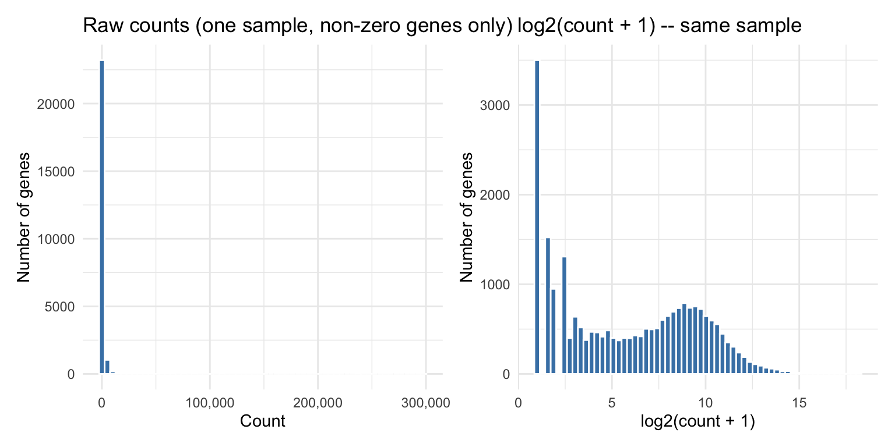
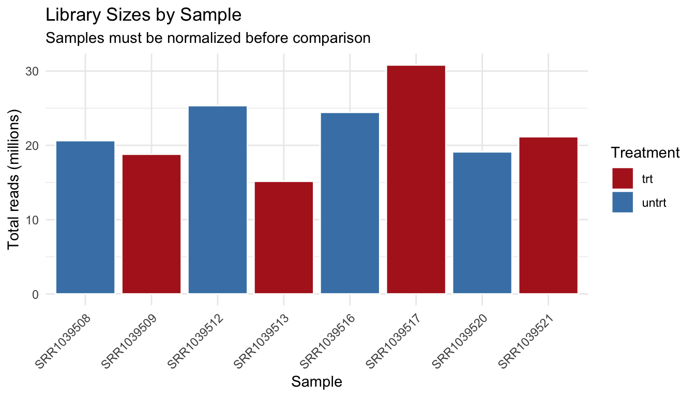
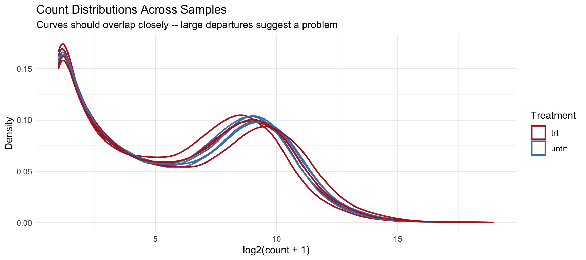
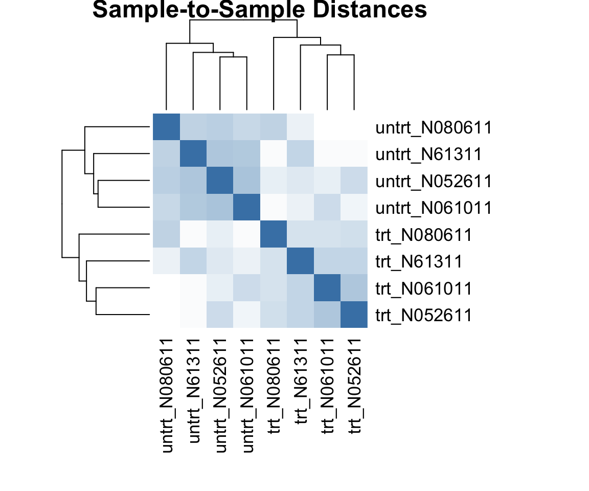
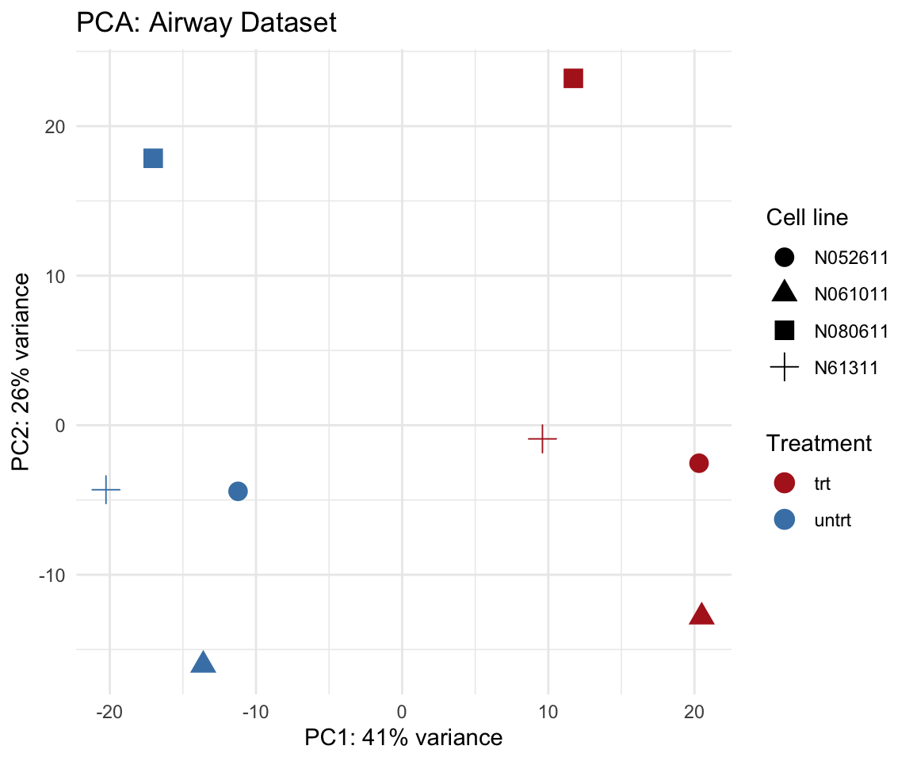

library(tidyverse)
library(this.path)
library(SummarizedExperiment)
# uncomment the lines below to install packages required for 'airway' and its analysis:
# if (!requireNamespace("BiocManager", quietly = TRUE))
# install.packages("BiocManager")
# BiocManager::install("airway")
# BiocManager::install("DESeq2")
library(airway)
setwd(this.dir())Day 11: Genomics Data – Structure, Formats, and Quality Assessment
SC INBRE Biostatistics Summer Intensive 2026
1 Overview
This week we shift from modeling a handful of variables on a few thousand participants to analyzing tens of thousands of variables simultaneously. The biological data are different, but the statistical questions are familiar: is this variable associated with the outcome? How do we adjust for confounders? How do we avoid false positives when testing thousands of hypotheses at once?
Today’s session has one goal: understand the structure of genomics data well enough to work with it in R. Everything else this week builds on this foundation.
We will work with the airway dataset throughout: an RNA-sequencing experiment measuring gene expression in human airway smooth muscle cells treated with dexamethasone (a glucocorticoid), compared with untreated controls. This dataset is small enough to explore interactively and clean enough to illustrate the core ideas without distraction.
Three examples:
- Example 1: The count matrix – what it is, what it looks like, and why standard regression does not apply directly.
- Example 2: The
SummarizedExperimentobject – how genomics data is organized in R, and how to access its components. - Example 3: Quality assessment – library sizes, zero-count genes, count distributions, and PCA.
2 The Statistical Setting
2.1 Why This Week Is Different
In everything we have done so far, the number of observations \(n\) was much larger than the number of variables \(p\). In the Framingham data, 4,240 participants and fewer than 20 predictors. Standard regression works because there is far more data than parameters to estimate.
RNA-sequencing data flips this relationship:
data(airway)
dim(airway)[1] 63677 8The airway dataset has 63677 genes (rows) and only 8 samples (columns). In a typical study you might have \(p \approx 20{,}000\) genes and \(n \approx 6\) to \(50\) samples. We are firmly in the regime \(p \gg n\).
This creates real statistical problems:
- You cannot fit a single regression with 20,000 predictors when you have 8 observations. The system is massively underdetermined.
- We instead test each gene separately (one gene at a time), which creates a different problem: testing 20,000 hypotheses simultaneously means many false positives by chance alone. Multiple testing correction (Day 13) is essential.
- The data are counts, not continuous measurements. Standard linear models and t-tests applied directly to raw counts give incorrect results. We need count-appropriate models (Day 12).
2.2 The Upstream Pipeline
We will not run the bioinformatics pipeline that converts raw sequencing output into analysis-ready data. That pipeline requires specialized software (STAR, HISAT2, featureCounts, Salmon) and computing infrastructure. What matters for us is knowing what each stage produces and where our work begins.
| Stage | Output | What it contains |
|---|---|---|
| Sequencing | FASTQ | Raw DNA sequences + quality scores |
| Alignment | BAM | Reads mapped to positions on the reference genome |
| Counting | Count matrix | Reads per gene per sample (integers) |
| Our starting point | Count matrix | What we analyze |
The airway dataset is already at the “count matrix” stage. Someone else ran the pipeline. Our job starts here.
3 Example 1: The Count Matrix
3.1 Loading and Inspecting the Data
data(airway)
airwayclass: RangedSummarizedExperiment
dim: 63677 8
metadata(1): ''
assays(1): counts
rownames(63677): ENSG00000000003 ENSG00000000005 ... ENSG00000273492
ENSG00000273493
rowData names(10): gene_id gene_name ... seq_coord_system symbol
colnames(8): SRR1039508 SRR1039509 ... SRR1039520 SRR1039521
colData names(9): SampleName cell ... Sample BioSampleThe printed summary tells us the object type (RangedSummarizedExperiment), dimensions, and what components are stored. We will unpack each component in Example 2. For now, extract the count matrix:
counts <- assay(airway)
dim(counts)[1] 63677 8counts[1:6, 1:4] SRR1039508 SRR1039509 SRR1039512 SRR1039513
ENSG00000000003 679 448 873 408
ENSG00000000005 0 0 0 0
ENSG00000000419 467 515 621 365
ENSG00000000457 260 211 263 164
ENSG00000000460 60 55 40 35
ENSG00000000938 0 0 2 0Each row is a gene (identified by an Ensembl gene ID such as ENSG00000000003). Each column is a sample (identified by an SRA run accession such as SRR1039508). Each value is the number of sequencing reads that mapped to that gene in that sample.
3.2 Statistical Properties of Count Data
Counts are non-negative integers. That immediately rules out several tools:
Why not use a standard t-test or linear regression on raw counts?
# Distribution of counts for the first sample
counts_s1 <- counts[, 1]
p1 <- tibble(count = counts_s1) |>
filter(count > 0) |>
ggplot(aes(x = count)) +
geom_histogram(bins = 60, fill = "steelblue", color = "white") +
scale_x_continuous(labels = scales::comma) +
labs(title = "Raw counts (one sample, non-zero genes only)",
x = "Count", y = "Number of genes") +
theme_minimal()
p2 <- tibble(count = counts_s1) |>
filter(count > 0) |>
mutate(log2count = log2(count + 1)) |>
ggplot(aes(x = log2count)) +
geom_histogram(bins = 60, fill = "steelblue", color = "white") +
labs(title = "log2(count + 1) -- same sample",
x = "log2(count + 1)", y = "Number of genes") +
theme_minimal()
library(patchwork)
p1 + p2
The raw count distribution is extremely right-skewed: a handful of highly expressed genes have counts in the hundreds of thousands, while most genes have counts in the single digits or zero. The log-transformed distribution is much more symmetric. This shape is characteristic of RNA-seq data and rules out Gaussian (normal) models for the raw counts.
Three additional properties make standard methods inappropriate:
- Counts are integers. Residuals from a linear model fit to count data cannot be normally distributed.
- Variance is not constant. Genes with higher mean expression have higher variance. Homoscedasticity fails.
- Many zeros. Genes with very low expression may have zero counts in some or all samples. Zeros are real observations, not missing data.
The appropriate model is the negative binomial distribution, which generalizes the Poisson to allow variance to exceed the mean. DESeq2 (Day 12) fits this model.
3.3 Zero-Count Genes
# How many genes have zero counts across all samples?
n_all_zero <- sum(rowSums(counts) == 0)
n_low <- sum(rowSums(counts) < 10)
cat("Genes with zero total counts:", n_all_zero, "\n")Genes with zero total counts: 30208 cat("Genes with fewer than 10 total counts:", n_low, "\n")Genes with fewer than 10 total counts: 41308 cat("Total genes:", nrow(counts), "\n")Total genes: 63677 A meaningful fraction of genes have very low or zero counts across all samples. These genes carry no information about differential expression and add noise to the multiple testing correction. Standard practice is to filter them out before modeling. We will do this in the PM lab and again on Day 12.
3.4 Sequencing Depth
Each sample is sequenced to a certain library size (total number of reads). If one sample has twice as many reads as another, its counts will tend to be twice as large even if the underlying biology is identical. Raw counts are not directly comparable across samples.
library_sizes <- colSums(counts)
tibble(
sample = names(library_sizes),
lib_size = library_sizes,
treatment = colData(airway)$dex
) |>
ggplot(aes(x = sample, y = lib_size / 1e6, fill = treatment)) +
geom_col(color = "white") +
scale_fill_manual(values = c("untrt" = "steelblue", "trt" = "firebrick")) +
labs(x = "Sample", y = "Total reads (millions)",
fill = "Treatment",
title = "Library Sizes by Sample",
subtitle = "Samples must be normalized before comparison") +
theme_minimal() +
theme(axis.text.x = element_text(angle = 45, hjust = 1))
Library sizes vary across samples even within the same experiment. Before comparing gene expression across samples, we must adjust for these differences. DESeq2 handles this through size factor estimation – a single scaling number per sample that accounts for its total sequencing depth.
4 Example 2: The SummarizedExperiment Object
4.1 Three Components, Always Linked
A genomics dataset is not just a count matrix. It has three linked components:
- The assay (count matrix): genes x samples, integer counts.
- Sample metadata (colData): one row per sample – treatment group, cell line, batch, patient ID, etc.
- Gene metadata (rowData): one row per gene – gene name, chromosome, genomic coordinates, gene type.
These three components must stay synchronized. If you reorder samples, the sample metadata must reorder too. If you filter genes, the gene metadata must filter too. Bioconductor’s SummarizedExperiment enforces this by design.
# The three accessor functions
assay(airway)[1:4, 1:4] # count matrix SRR1039508 SRR1039509 SRR1039512 SRR1039513
ENSG00000000003 679 448 873 408
ENSG00000000005 0 0 0 0
ENSG00000000419 467 515 621 365
ENSG00000000457 260 211 263 164colData(airway) # sample metadataDataFrame with 8 rows and 9 columns
SampleName cell dex albut Run avgLength
<factor> <factor> <factor> <factor> <factor> <integer>
SRR1039508 GSM1275862 N61311 untrt untrt SRR1039508 126
SRR1039509 GSM1275863 N61311 trt untrt SRR1039509 126
SRR1039512 GSM1275866 N052611 untrt untrt SRR1039512 126
SRR1039513 GSM1275867 N052611 trt untrt SRR1039513 87
SRR1039516 GSM1275870 N080611 untrt untrt SRR1039516 120
SRR1039517 GSM1275871 N080611 trt untrt SRR1039517 126
SRR1039520 GSM1275874 N061011 untrt untrt SRR1039520 101
SRR1039521 GSM1275875 N061011 trt untrt SRR1039521 98
Experiment Sample BioSample
<factor> <factor> <factor>
SRR1039508 SRX384345 SRS508568 SAMN02422669
SRR1039509 SRX384346 SRS508567 SAMN02422675
SRR1039512 SRX384349 SRS508571 SAMN02422678
SRR1039513 SRX384350 SRS508572 SAMN02422670
SRR1039516 SRX384353 SRS508575 SAMN02422682
SRR1039517 SRX384354 SRS508576 SAMN02422673
SRR1039520 SRX384357 SRS508579 SAMN02422683
SRR1039521 SRX384358 SRS508580 SAMN02422677rowData(airway)[1:4, ] # gene metadata (first 4 rows)DataFrame with 4 rows and 10 columns
gene_id gene_name entrezid gene_biotype
<character> <character> <integer> <character>
ENSG00000000003 ENSG00000000003 TSPAN6 NA protein_coding
ENSG00000000005 ENSG00000000005 TNMD NA protein_coding
ENSG00000000419 ENSG00000000419 DPM1 NA protein_coding
ENSG00000000457 ENSG00000000457 SCYL3 NA protein_coding
gene_seq_start gene_seq_end seq_name seq_strand
<integer> <integer> <character> <integer>
ENSG00000000003 99883667 99894988 X -1
ENSG00000000005 99839799 99854882 X 1
ENSG00000000419 49551404 49575092 20 -1
ENSG00000000457 169818772 169863408 1 -1
seq_coord_system symbol
<integer> <character>
ENSG00000000003 NA TSPAN6
ENSG00000000005 NA TNMD
ENSG00000000419 NA DPM1
ENSG00000000457 NA SCYL34.2 The Sample Metadata: Your Study Design
colData(airway) |> as_tibble()# A tibble: 8 × 9
SampleName cell dex albut Run avgLength Experiment Sample BioSample
<fct> <fct> <fct> <fct> <fct> <int> <fct> <fct> <fct>
1 GSM1275862 N61311 untrt untrt SRR10395… 126 SRX384345 SRS50… SAMN0242…
2 GSM1275863 N61311 trt untrt SRR10395… 126 SRX384346 SRS50… SAMN0242…
3 GSM1275866 N052611 untrt untrt SRR10395… 126 SRX384349 SRS50… SAMN0242…
4 GSM1275867 N052611 trt untrt SRR10395… 87 SRX384350 SRS50… SAMN0242…
5 GSM1275870 N080611 untrt untrt SRR10395… 120 SRX384353 SRS50… SAMN0242…
6 GSM1275871 N080611 trt untrt SRR10395… 126 SRX384354 SRS50… SAMN0242…
7 GSM1275874 N061011 untrt untrt SRR10395… 101 SRX384357 SRS50… SAMN0242…
8 GSM1275875 N061011 trt untrt SRR10395… 98 SRX384358 SRS50… SAMN0242…The colData is your study design matrix. Before fitting any model, you need to understand every column:
SampleName: the sample identifier.cell: the cell line (four different cell lines in this experiment).dex: treatment group –trt(dexamethasone-treated) oruntrt(untreated control). This is the primary variable of interest.albut: whether the sample was also treated with albuterol (not the focus here).Run,avgLength,Experiment,Sample,BioProject: SRA metadata.
Important
Always inspect colData before modeling. Know which column encodes treatment vs. control. Verify that the sample order in the count matrix matches the sample order in the metadata. A mismatch here means every downstream result is wrong.
4.3 Verifying the Alignment
One of the most important sanity checks in genomics analysis: confirm that the column names of the count matrix match the row names of colData.
# Column names of the count matrix
colnames(assay(airway))[1] "SRR1039508" "SRR1039509" "SRR1039512" "SRR1039513" "SRR1039516"
[6] "SRR1039517" "SRR1039520" "SRR1039521"# Row names of the sample metadata
rownames(colData(airway))[1] "SRR1039508" "SRR1039509" "SRR1039512" "SRR1039513" "SRR1039516"
[6] "SRR1039517" "SRR1039520" "SRR1039521"# Are they identical and in the same order?
identical(colnames(assay(airway)), rownames(colData(airway)))[1] TRUEIf this returns FALSE, something is wrong with the data object and no analysis should proceed until it is resolved.
4.4 Subsetting a SummarizedExperiment
One of the key benefits of SummarizedExperiment is that subsetting keeps all three components synchronized automatically.
# Select only the treated samples
airway_trt <- airway[, airway$dex == "trt"]
dim(airway_trt)[1] 63677 4colData(airway_trt)$dex[1] trt trt trt trt
Levels: trt untrtCompare this with what would happen if the count matrix and metadata were stored as separate objects: you would have to manually subset both in the same order, and a mistake would silently corrupt the analysis.
4.5 The Gene Metadata
airway_rowdata <- rowData(airway) |>
as_tibble()
airway_rowdata |>
select(gene_id, gene_name, gene_biotype) |>
head(10)# A tibble: 10 × 3
gene_id gene_name gene_biotype
<chr> <chr> <chr>
1 ENSG00000000003 TSPAN6 protein_coding
2 ENSG00000000005 TNMD protein_coding
3 ENSG00000000419 DPM1 protein_coding
4 ENSG00000000457 SCYL3 protein_coding
5 ENSG00000000460 C1orf112 protein_coding
6 ENSG00000000938 FGR protein_coding
7 ENSG00000000971 CFH protein_coding
8 ENSG00000001036 FUCA2 protein_coding
9 ENSG00000001084 GCLC protein_coding
10 ENSG00000001167 NFYA protein_coding# What gene types are present?
table_biotype = table(airway_rowdata$gene_biotype)
head(table_biotype[order(table_biotype, decreasing = TRUE)], 10)
protein_coding pseudogene lincRNA
22810 15583 7340
antisense miRNA misc_RNA
5485 3361 2174
snRNA snoRNA processed_transcript
2067 1549 819
sense_intronic
767 Most genes in the annotation are protein-coding, but there are also long non-coding RNAs, pseudogenes, and other categories. In a standard differential expression analysis, we often filter to protein-coding genes, though this is not always necessary.
5 Example 3: Quality Assessment
Quality assessment in genomics plays the same role as residual diagnostic plots in regression: it is a required first step before any modeling. Problems discovered at this stage – outlier samples, batch effects, misannotated metadata – are far easier to fix now than after a full analysis.
5.1 Library Sizes Revisited
We already plotted library sizes above. The summary statistics:
tibble(
sample = colnames(airway),
lib_size = colSums(assay(airway)),
treatment = colData(airway)$dex,
cell_line = colData(airway)$cell
) |>
arrange(lib_size)# A tibble: 8 × 4
sample lib_size treatment cell_line
<chr> <dbl> <fct> <fct>
1 SRR1039513 15163415 trt N052611
2 SRR1039509 18809481 trt N61311
3 SRR1039520 19126151 untrt N061011
4 SRR1039508 20637971 untrt N61311
5 SRR1039521 21164133 trt N061011
6 SRR1039516 24448408 untrt N080611
7 SRR1039512 25348649 untrt N052611
8 SRR1039517 30818215 trt N080611 No sample has an extreme outlier library size (e.g., ten times smaller than the others), which would be a red flag suggesting a failed sequencing run. The variation we see is normal and will be handled by normalization.
5.2 Count Distributions Across Samples
After confirming that library sizes are reasonable, check that the count distributions look similar in shape across samples.
assay(airway) |>
as_tibble(rownames = "gene") |>
pivot_longer(-gene, names_to = "sample", values_to = "count") |>
filter(count > 0) |>
mutate(log2count = log2(count + 1)) |>
left_join(
colData(airway) |> as_tibble(rownames = "sample") |>
select(sample, dex),
by = "sample"
) |>
ggplot(aes(x = log2count, color = dex, group = sample)) +
geom_density(linewidth = 0.8, alpha = 0.8) +
scale_color_manual(values = c("untrt" = "steelblue", "trt" = "firebrick")) +
labs(x = "log2(count + 1)", y = "Density",
color = "Treatment",
title = "Count Distributions Across Samples",
subtitle = "Curves should overlap closely -- large departures suggest a problem") +
theme_minimal()
The density curves should overlap closely. Curves that are shifted or shaped differently from the others may indicate a problematic sample.
5.3 Filtering Low-Count Genes
# Keep only genes with at least 10 total counts across all samples
keep <- rowSums(assay(airway)) >= 10
airway_filtered <- airway[keep, ]
cat("Genes before filtering:", nrow(airway), "\n")Genes before filtering: 63677 cat("Genes after filtering: ", nrow(airway_filtered), "\n")Genes after filtering: 22369 cat("Genes removed: ", nrow(airway) - nrow(airway_filtered), "\n")Genes removed: 41308 Note that subsetting airway[keep, ] keeps the count matrix, sample metadata, and gene metadata all synchronized automatically.
5.4 Sample-to-Sample Distances
A useful summary of the data is the pairwise distance between samples: how similar is each sample to every other? If the experiment is working, samples from the same treatment group should be closer to each other than to samples from the other group.
library(DESeq2)
# Variance-stabilizing transformation: puts counts on a scale
# appropriate for distance calculations and PCA
dds <- DESeqDataSet(airway_filtered, design = ~ dex)
vsd <- vst(dds, blind = TRUE)
# Sample-to-sample distances on the transformed data
sample_dists <- dist(t(assay(vsd)))
dist_matrix <- as.matrix(sample_dists)
# Label rows and columns with treatment group and cell line
colnames(dist_matrix) <- rownames(dist_matrix) <-
paste(colData(airway_filtered)$dex,
colData(airway_filtered)$cell, sep = "_")
# Heatmap using base R (or you can use pheatmap)
heatmap(dist_matrix,
symm = TRUE,
col = colorRampPalette(c("steelblue", "white"))(50),
main = "Sample-to-Sample Distances",
margins = c(10, 10))
Samples in the same treatment group should show small distances (darker shading if using blue-to-white), forming visible blocks along the diagonal. Unexpected clustering – for example, one treated sample clustering with all the untreated samples – would be a sign of a mislabeled or failed sample.
5.5 PCA Plot
Principal Component Analysis (PCA) reduces the 20,000-dimensional count matrix to two dimensions that capture the most variation. It is the fastest way to see whether samples cluster as expected.
pca_data <- plotPCA(vsd, intgroup = c("dex", "cell"), returnData = TRUE)
pct_var <- round(100 * attr(pca_data, "percentVar"))
ggplot(pca_data, aes(x = PC1, y = PC2, color = dex, shape = cell)) +
geom_point(size = 4) +
scale_color_manual(values = c("untrt" = "steelblue", "trt" = "firebrick")) +
labs(x = paste0("PC1: ", pct_var[1], "% variance"),
y = paste0("PC2: ", pct_var[2], "% variance"),
color = "Treatment", shape = "Cell line",
title = "PCA: Airway Dataset") +
theme_minimal()
Reading the PCA plot:
- PC1 (horizontal axis) captures the most variation in the dataset. In a well-designed experiment, PC1 often separates the treatment groups (like it does here).
- PC2 (vertical axis) captures the next largest source of variation. Here, it often reflects cell-line differences.
- If samples from the same treatment group are scattered widely, or if the groups do not separate at all, something may be wrong with the experiment, the data, or the metadata.
In the airway data, treated and untreated samples separate clearly along PC1, and the four cell lines are visible along PC2. This is a clean, well-behaved dataset – a good baseline for learning the methods before working with messier real-world data.
5.6 Batch Effects
A batch effect is systematic technical variation introduced by when or how samples were processed. Common sources include different sequencing runs, different lab technicians, different reagent lots, and different processing dates.
# Check whether any technical variable is confounded with treatment
colData(airway) |>
as_tibble() |>
select(SampleName, cell, dex, Run) |>
arrange(dex, cell)# A tibble: 8 × 4
SampleName cell dex Run
<fct> <fct> <fct> <fct>
1 GSM1275867 N052611 trt SRR1039513
2 GSM1275875 N061011 trt SRR1039521
3 GSM1275871 N080611 trt SRR1039517
4 GSM1275863 N61311 trt SRR1039509
5 GSM1275866 N052611 untrt SRR1039512
6 GSM1275874 N061011 untrt SRR1039520
7 GSM1275870 N080611 untrt SRR1039516
8 GSM1275862 N61311 untrt SRR1039508In the airway data, each cell line contributes one treated and one untreated sample, so cell line is balanced across treatment groups. This is good experimental design: if cell line had been confounded with treatment (e.g., all treated samples from one cell line, all untreated from another), it would be impossible to separate the dexamethasone effect from the cell-line effect.
Warning
Batch effects are a design problem first, a statistical problem second. Statistical methods (e.g., including batch as a covariate in the model) can adjust for batch effects if the batch variable is known and balanced across treatment groups. If batches are confounded with treatment, no statistical method can separate them. This is a problem that must be caught at the study design stage, not the analysis stage.
6 Summary
Five things to carry into Days 12–13:
Genomics data is high-dimensional (\(p \gg n\)). We cannot fit a single regression. We test genes one at a time and correct for multiple testing.
The count matrix is our starting point. Rows are genes, columns are samples, values are non-negative integers. The upstream bioinformatics pipeline produces this; we work with what it produces.
Counts require special treatment. They are right-skewed, non-normal, and have variance that scales with the mean. Normalization for sequencing depth is required. The negative binomial model is appropriate. DESeq2 handles all of this.
The
SummarizedExperimentkeeps everything synchronized. Always useassay(),colData(), androwData()to access the components. Always inspectcolDatabefore modeling.Quality assessment before modeling. Check library sizes, count distributions, sample-to-sample distances, and PCA. Identify and investigate outlier samples and potential batch effects before fitting any model.
This afternoon you will repeat these steps on a dataset you download directly from GEO using the GEOquery package.